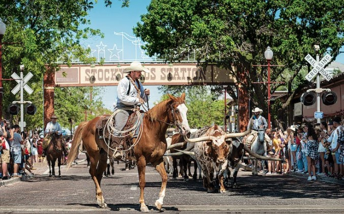

Fun Fort Worth Facts

-One of Bonnie and Clyde’s hideouts from the law was the historic Stockyards Hotel in Fort Worth. It is now one of the city’s most haunted spots.
-The city continues its cattle connection with a free twice-daily cattle drive in the Stockyards. At 11:30 a.m. and 4 p.m. each day, Texas cowhands drive a herd of Texas longhorns down Exchange Avenue.
Latin Influence
-Fort Worth was awarded the 18th best city for Hispanic entrepreneurs by ‘Fortune’ magazine in 2018.
-Many visitors experience Fort Worth’s Hispanic heritage on the city’s North Side, but Latin American culture permeates many neighborhoods. About a third of Fort Worth’s approximate 900,000 population identifies as Hispanic.
Highest Record Temperture Recorded
-The city’s highest recorded temperature was 115ºF (46ºC) on August 11, 1936, and June 26, 1980.
-The hottest month of the year in Fort Worth is August, with an average high of 95°F.
-The Dallas-Fort Worth climate is humid subtropical with hot summers. It is also continental, characterized by a wide annual temperature range.
Businesses in Fort Worth

-Fort Worth Texas has grown over the years from being just a Cowtown of the late 18 centuries to an industrial giant of today.
-The city host a wide range of major industries that span life science, telecommunication, energy, aerospace and defense, professional services, manufacturing and many more.